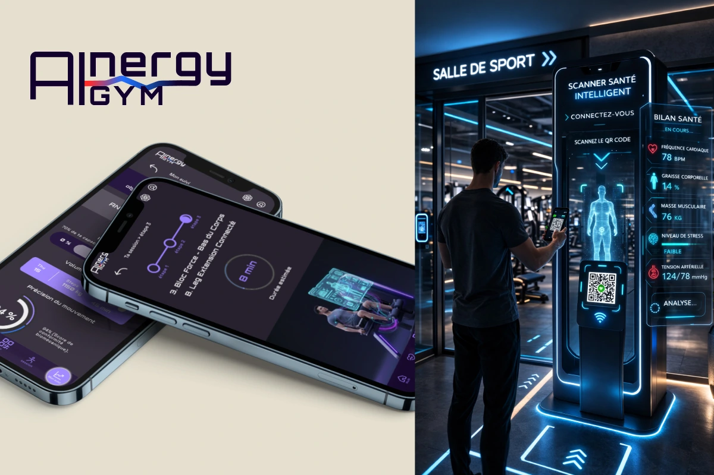
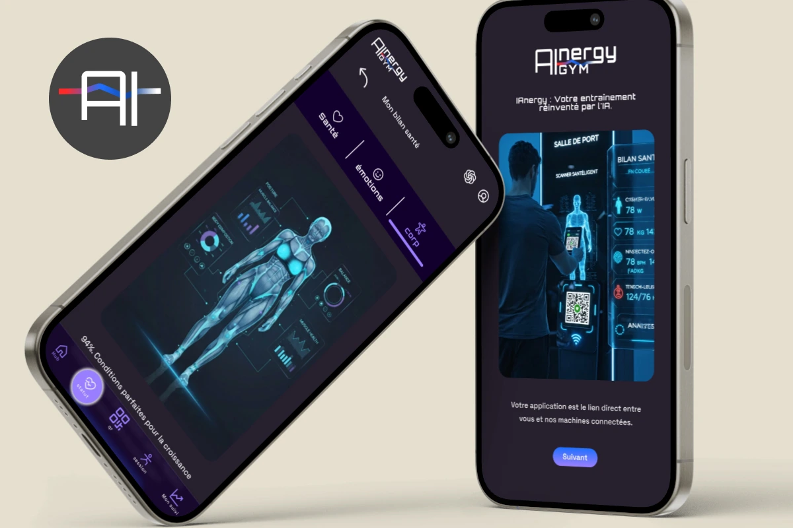
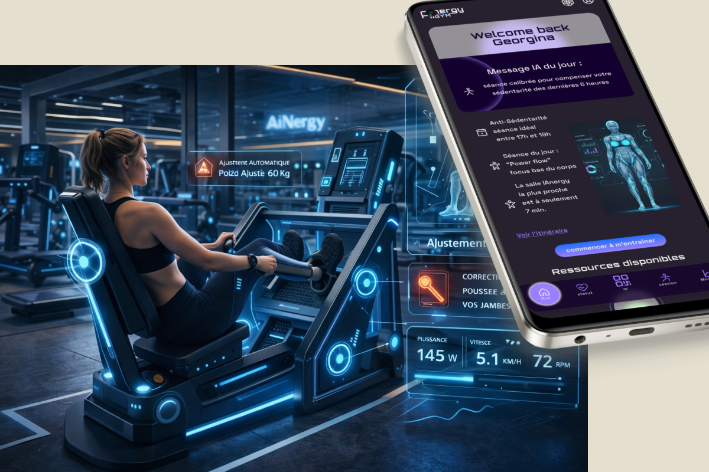
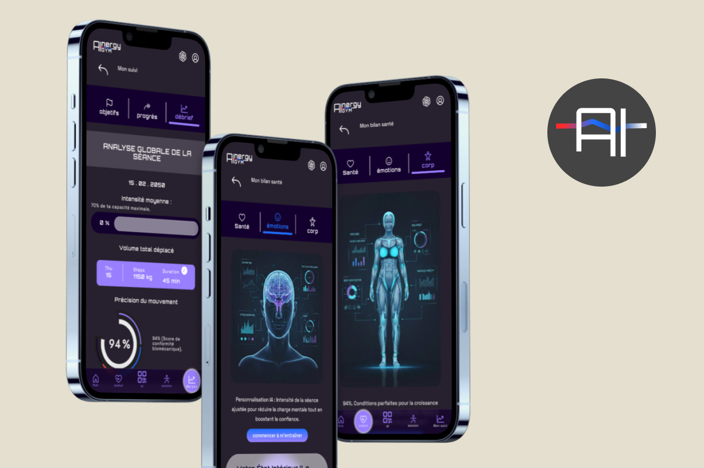

Problèmes
- Comment proposer une expérience sportive ultra-personnalisée dans un environnement futuriste ?
- Comment traduire des données biométriques complexes en une interface intuitive et désirable ?
Étude de cas - 2026 - Design UX/UI
IAnergy est une application mobile connectée à une salle de sport futuriste imaginée en 2050. Elle accompagne les utilisateurs souhaitant adopter un mode de vie actif tout en prévenant les blessures, grâce à une analyse biométrique en temps réel réalisée dès l'entrée de la salle.
Voir le prototype →
01 — Context
IAnergy est une application mobile connectée à une salle de sport futuriste imaginée en 2050. Elle accompagne les utilisateurs souhaitant adopter un mode de vie actif tout en prévenant les blessures, grâce à une analyse biométrique en temps réel réalisée dès l'entrée de la salle.
02 — Problématique & objectifs
Problèmes
Objectifs
03 — Process
01
Design Thinking pour l'idéation d'un concept futuriste, analyse concurrentielle des user journeys d'applications sport, définition des personas.
02
Priorisation des fonctionnalités et structuration du contenue
03
Création de l'identité visuelle et de la charte graphique IAnergy, wireframes basse fidélité, prototypage haute fidélité avec interactions sur Figma.
04
Conception d'un prototype interactif haute fidélité. Une immersion dans le futur du sport
04 — Solution
IAnergy s’appuie sur un scanner intelligent connecté à l’application. Situé à l’entrée de la salle, ce dispositif réalise un bilan biométrique instantané afin d’adapter automatiquement les recommandations sportives de l’utilisateur.
Les données collectées alimentent une interface personnalisée capable de proposer des routines optimisées, pensées pour améliorer la performance tout en réduisant les risques de blessure.


05 — Results

06 — Compétences
Exploration